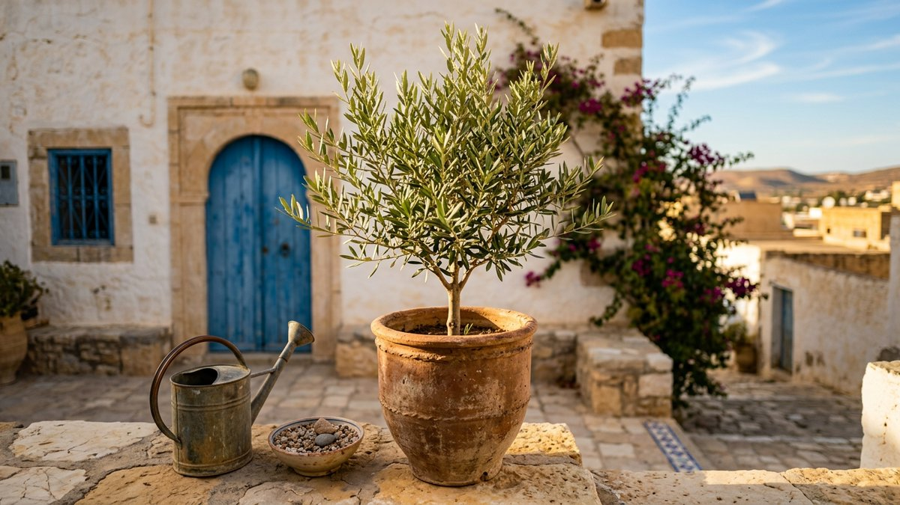

How to Grow an Olive Tree in a Pot: The Complete Care Guide (2026)
By Anis Touati · October 8, 2026 · 9 min read
The short answer: an olive tree grows happily in a pot if you give it three things: lots of sun, a gritty, free-draining mix, and a cool (but not freezing) winter. Get those right and a potted olive will live for decades on a balcony or patio, and in a good year it may even give you a small handful of fruit.
We grow olives for a living on a dry hillside in Tunisia, and most of what keeps a field tree healthy also keeps a potted one healthy. This guide walks you through every step, from picking the pot to bringing the tree in for winter, with the mistakes we see most often.

- Light: full sun, the more the better.
- Pot: pot up in stages to a final size of at least 45 cm (18 in) across.
- Mix: soil-based compost with plenty of grit or sharp sand.
- Water: deeply, then let the top of the mix dry out. Never leave the pot standing in water.
- Winter: cool and bright. Olives need roughly 200–300 hours of chill to flower, but hard frost in a pot can kill roots.
Why olives make great container trees
The Royal Horticultural Society lists olives among the tender trees that are ideal for pots, because a pot can be moved to a frost-free place in winter. Olives are evergreen, slow-growing and drought-tolerant once settled. Their silver-green leaves look good all year, and they cope with the dry air of a sunny balcony better than most fruit trees.
There's one honest catch. In the ground, an olive wants to become a real tree. The RHS gives a mature height of about 4.5–9 m, and the University of California notes that commercial trees are spaced about 6 m (20 ft) apart because that's their natural size. A pot simply keeps that ambition in check.
Step 1: Choose the right tree
Buy a grafted or cutting-grown tree from a nursery, not a seedling. Grafted trees skip the long juvenile stage. Our olive fruiting timeline explains why that matters: grafted trees can fruit in 3–5 years, while seed-grown trees may take 8–15.
| If you want… | Look for | Why |
|---|---|---|
| Fruit in a container | A self-fertile variety, such as 'Arbequina' | One tree can set fruit on its own |
| Extra cold tolerance | Varieties the RHS calls fairly hardy, such as 'Aglandau' or 'Cailletier' | Better odds through a cold snap |
| A patio feature | A half-standard with a clear stem | Neat shape, small footprint |
| Fast establishment | A healthy 1–2 year tree, not root-bound | Young roots settle quickly |
Tip from UC Agriculture and Natural Resources: very large nursery trees have often been in their container too long, are frequently root-bound and aren't actively growing. A smaller, vigorous tree usually catches up fast.
Step 2: Pick the pot
- Size: the RHS advises potting a small tree up in stages rather than straight into a huge container, finishing at a minimum of about 45 cm (18 in). For most fruit, it suggests 45–50 cm.
- Material: frost-proof terracotta is heavy and stable, which helps in wind. It also breathes, so roots dry out between waterings. Plastic is lighter and easier to move.
- Drainage: several open holes are non-negotiable. Raise the pot on feet so water escapes freely.
- Mobility: if the tree must come indoors in winter, think about the weight now. A plant dolly saves backs.
Step 3: Get the potting mix right
Wet roots kill more potted olives than anything else. The RHS warns that wet, heavy soil can cause root rot, and recommends a soil-based compost with added sharp sand for olives under glass.
| Ingredient | Share (rough guide) | Job |
|---|---|---|
| Soil-based compost (John Innes No. 3 type) | About two-thirds | Weight, nutrients, structure |
| Horticultural grit or sharp sand | About one-third | Fast drainage, air for roots |
| Gravel mulch on top | A thin layer | Keeps the stem base dry, looks tidy |
This mix is our own field-tested rule of thumb, in line with RHS and BBC Gardeners' World advice to add grit to a soil-based mix.
Step 4: Sun and position
Olives are sun trees. The RHS lists their position as full sun, and recommends a warm, sheltered spot such as near a sunny wall. Gardening Know How suggests at least six hours of direct sun a day for container olives.
- Best spot: a south- or west-facing patio, balcony or courtyard.
- Shelter: a wall behind the pot adds warmth and blocks cold wind.
- Indoors: only as a winter stop. Year-round indoors, most olives get too little light and too little chill to flower.
In our grove, the trees that struggle are almost never short of water. They're short of drainage or short of sun.
Step 5: Watering through the year
Pots dry out much faster than the ground, especially in full sun. The RHS notes that container plants may need watering up to twice a day in hot weather, but must never sit waterlogged, especially in winter.
| Season | How to water | Watch for |
|---|---|---|
| Spring | Water deeply when the top few centimeters are dry | New growth needs steady moisture |
| Summer | Check daily; water thoroughly in heat waves | Leaf drop or curling from drought |
| Autumn | Taper off as growth slows | Remove saucers before the wet season |
| Winter | Water sparingly, only when quite dry | Soggy mix and root rot |
A simple test: push a finger into the mix up to the second knuckle. If it's dry, water until it runs from the holes. If it's damp, wait.
Step 6: Feeding and repotting
- Feed lightly in the growing season. BBC Gardeners' World suggests a liquid seaweed feed every two weeks from April to September.
- Don't overdo nitrogen. Too much pushes leaves at the expense of flowers, the classic beginner mistake we describe in our fruiting timeline.
- Repot or top-dress. The RHS suggests repotting every year or every other year until the tree reaches its final pot. After that, replace the top few centimeters of mix each spring.
Step 7: Winter care, the make-or-break season
Here's the balance you need to strike. Olives need a cool winter to flower, but roots in a pot are exposed to cold from every side.
The chill your tree needs
University of Florida IFAS Extension explains that olives generally need 200–300 chill hours, counted mostly below about 7°C (45°F), to bloom and set fruit. Mother Earth News gives the same 200–300 hour range and suggests keeping wintering trees somewhere cool and bright at roughly 4–10°C (40–50°F).
The cold it can't take
The RHS rates the common olive as hardy to roughly −5 to −10°C in the ground, and says plants may not survive below −10°C without protection. Potted roots are more vulnerable than that, so play it safe.
| Your winter | What to do |
|---|---|
| Mild, rarely below 0°C | Leave outside against a sunny wall; raise the pot off cold, wet ground |
| Regular light frosts | Wrap the pot in fleece or bubble wrap; move it into shelter on hard-frost nights |
| Long freezes or snow | Move to a frost-free, bright place such as a cool greenhouse or porch (the RHS defines frost-free as a night minimum of about 4°C) |
Pruning and shaping
Prune in late spring once the risk of frost has passed. Keep it light. Remove dead or crossing branches, thin the center so light gets in, and shorten over-long shoots to keep the shape compact. Olives flower on the previous year's growth, so heavy pruning every year means few or no flowers.
Will a potted olive give you olives?
Sometimes, yes. In a sunny spot, with a proper winter chill and a self-fertile variety, a mature potted tree can produce a small crop. The RHS is honest that fruit appears mainly in hot summers and warm gardens, and that olives need special preparation before you can eat them. Fresh olives are very bitter until they're cured in water or brine.
For most container growers, the real reward is the tree itself: a little piece of the Mediterranean that lives for decades.
Your first-year calendar
| When | Main job |
|---|---|
| Spring (after frosts) | Buy and pot up the tree; place it in full sun; start light feeding |
| Early summer | Light shaping prune; check water every day or two |
| High summer | Deep watering in heat waves; watch for scale insects |
| Autumn | Stop feeding; remove the saucer; plan the winter spot |
| Winter | Keep cool and bright; water sparingly; protect from hard frost |
Keep a simple notebook or phone note with dates for watering, feeding and the first frost. After one year, you'll know exactly how your tree behaves in your space, and the second year gets much easier.
Troubleshooting: what your olive is telling you
| Symptom | Likely cause | Fix |
|---|---|---|
| Yellow leaves, soggy mix | Overwatering or poor drainage | Water less; add grit; clear drainage holes |
| Sudden leaf drop indoors | Low light or a big temperature change | Move to the brightest cool spot |
| Crispy, curled leaves in summer | Drought stress | Water deeply; check the pot daily in heat |
| Healthy tree, no flowers | Not enough winter chill, or too much nitrogen | Cooler winter spot; lighter feeding |
| Black, sooty film on leaves | Sap-sucking insects such as scale | Wipe leaves; treat the insects |
Harvesting your own olives? Learn how to cure olives at home safely with water or brine.
From one pot to a whole hillside
Everything in this guide is a small-scale version of what we do every day on our family's land in Tunisia: choose grafted trees, give them sun and drainage, water deeply but rarely, and wait patiently. The difference is scale. Our grove plants young grafted trees, and every donated tree gets a certificate and a public on-chain record. You can read why we're planting in Tunisia and how the projects are budgeted.
If you've enjoyed growing your own olive and you'd like to help a whole grove take root, you can plant a tree in the grove for $10. Every donation is sent in USDT and appears on a public blockchain ledger, and you can claim a certificate with your name. We're an independent family initiative, not a registered charity, and our transparency page shows exactly how funds can be checked.
Plant an olive tree in Tunisia 🫒
Frequently asked questions
Can an olive tree live in a pot permanently?
Yes. With a final pot of at least 45 cm (18 in), a gritty mix, full sun and regular top-dressing or repotting, an olive can live in a container for many years.
How often should I water a potted olive tree?
Water deeply when the top few centimeters of mix are dry. That may be daily in a summer heat wave and only every few weeks in a cool winter. Never let the pot stand in water.
Can I keep an olive tree indoors?
Only for winter, in the brightest cool spot you have. Year-round indoors, most olives get too little light and too little winter chill to flower.
How cold can a potted olive tree get?
In the ground, olives may survive down to about −10°C, but roots in pots are more exposed. Protect the pot during frosts and move it to a frost-free place in long freezes.
Will my potted olive tree produce olives?
It can, especially a self-fertile variety in a sunny spot that gets 200–300 hours of winter chill. Crops are usually small, and the fruit must be cured before eating.
Sources
- RHS: "How to grow olives," "Olives" plant guide, "Olea europaea" plant details, "Trees: growing in containers," "Fruit in containers," and "Growing plants in containers."
- UC Agriculture and Natural Resources: "Planting an olive tree."
- UF/IFAS Extension St. Lucie County: "Growing olive tree in Florida" (chill hours).
- Mother Earth News: "Growing olive trees in pots" (2026).
- Gardening Know How: "Container grown olive trees."
- BBC Gardeners' World: "How to grow olive trees."